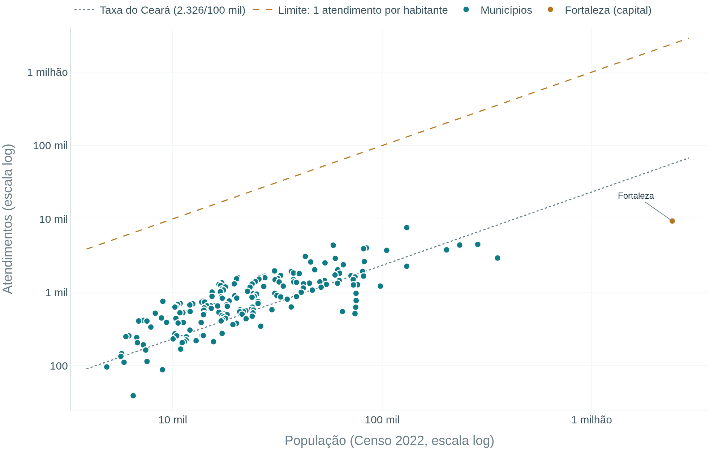
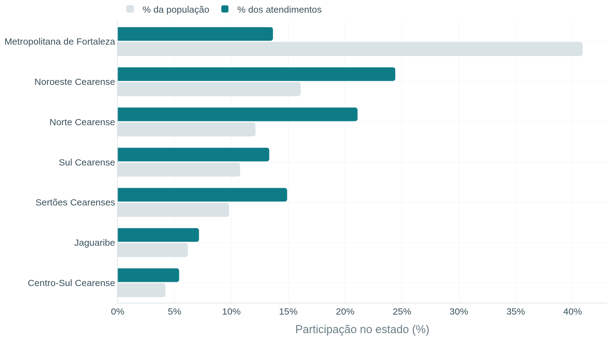
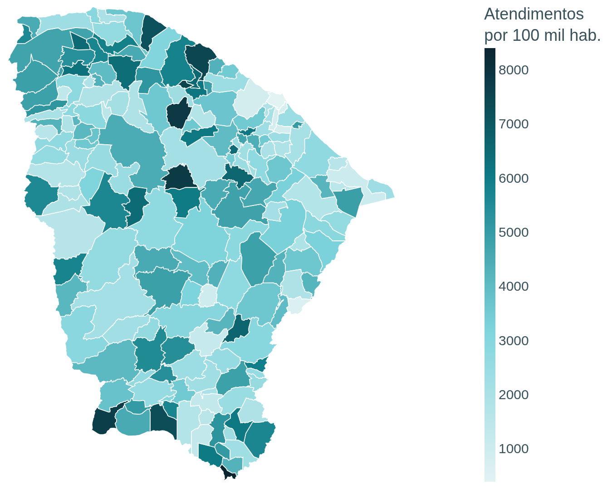
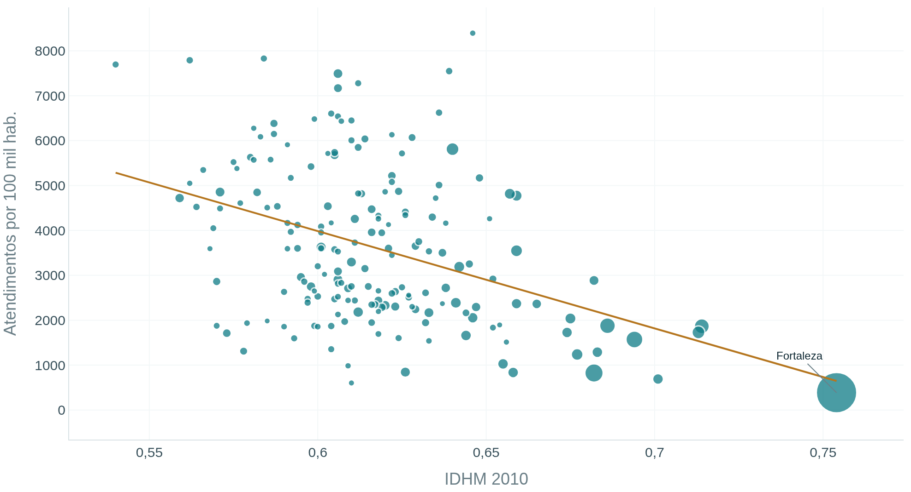
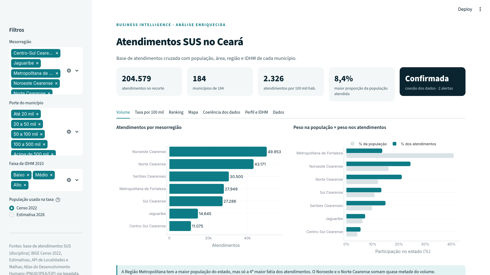

A atividade pede que a base de atendimentos seja enriquecida com informações dos municípios para tornar a análise mais significativa, demonstrar a coerência entre atendimentos e população e gerar visualizações de BI. Sozinha, a base não permite comparar municípios: 9.364 atendimentos em Fortaleza e 7.620 em Itapipoca parecem números próximos, mas Fortaleza tem cerca de 2,4 milhões de habitantes e Itapipoca, cerca de 130 mil.
| Base | O que traz | Fonte |
|---|---|---|
| Atendimentos SUS | 204.579 registros: ID, município e primeiro nome | Disciplina (arquivo DADOS.txt) |
| Censo 2022 | População residente, área (km²) e densidade (hab./km²) | IBGE, SIDRA tabela 4714 |
| Estimativa de população | População estimada de 2026, usada como teste de sensibilidade | IBGE, SIDRA tabela 6579 |
| Divisão territorial | Código IBGE, mesorregião, microrregião, regiões intermediária e imediata | IBGE, API de Localidades |
| IDHM 2010 | Índice de Desenvolvimento Humano Municipal do último Atlas por município | PNUD, IPEA e FJP via Ipeadata |
| Geografia | Polígonos dos municípios e coordenadas das sedes, para os mapas | IBGE, API de Malhas; repositório municipios-brasileiros |
Todas as bases foram baixadas por script (src/coleta_ibge.py), o que torna o trabalho reproduzível. Usamos o Censo 2022 como população principal por ser contagem e não projeção.
Antes de cruzar as bases, revisamos cada coluna. Nenhum registro foi descartado: os problemas foram corrigidos ou marcados na coluna qualidade_nome.
| Problema | Tratamento | Registros |
|---|---|---|
| Município com espaços sobrando | O campo tem largura fixa de 100 caracteres. Removemos os espaços das pontas. | 204.579 |
| Grafia antiga: ITAPAGÉ | Ligado a Itapajé, nome usado no cadastro atual do IBGE (código 2306306). | 1.070 |
| Caractere corrompido no nome | O símbolo de erro de codificação (como em "�MARIA") foi removido. | 16 |
| Dígito no lugar de letra | "J0SE" com zero foi corrigido para JOSE. | 1 |
| Nome "NA" | O pandas lê o texto NA como valor ausente sem avisar. Lemos tudo como texto e marcamos o caso como "não informado". | 1 |
| Nome com uma letra | Mantido e marcado como abreviado. | 6 |
Nomes de município não são uma boa chave: mudam de grafia e têm acentos. Por isso criamos uma chave normalizada (maiúsculas, sem acento e sem espaços extras), comparamos com o cadastro do IBGE e, a partir daí, toda a ligação passa a ser feita pelo código IBGE de 7 dígitos, que é único e estável. As demais bases do IBGE e do Ipeadata já vêm com esse código.
# src/etl.py (trecho) df["chave"] = df["municipio_original"].str.strip().map(chave).replace(ALIAS_MUNICIPIO) df = df.merge(municipios_ibge, on="chave", how="left", validate="many_to_one") # validate garante que cada município do IBGE aparece uma única vez do lado direito
| Indicador | Cálculo | Para que serve |
|---|---|---|
| Taxa por 100 mil hab. | atendimentos ÷ população × 100.000 | Comparar municípios de tamanhos diferentes |
| % da população atendida | atendimentos ÷ população × 100 | Testar se algum município passa de 100% |
| Índice de representatividade | % dos atendimentos ÷ % da população | Igual a 1 quando o município recebe a parte esperada pelo seu tamanho |
| Porte e faixa de IDHM | Faixas de população e faixas do PNUD (baixo, médio, alto) | Agrupar municípios parecidos |
Verificar a coesão é responder se as bases fazem sentido juntas ou se têm contradições. O enunciado pede, em especial, verificar se há municípios com mais atendimentos que habitantes. Aplicamos as verificações abaixo, todas automatizadas no etl.py:
| Verificação | O que encontramos | Status |
|---|---|---|
| Identificadores | 204.579 IDs únicos e sequenciais de 1 a 204.579 | OK |
| Junção com o IBGE | 204.579 de 204.579 registros casados com um código IBGE | OK |
| Cobertura territorial | 184 dos 184 municípios do Ceará têm atendimentos | OK |
| Atendimentos acima da população | Nenhum município tem mais atendimentos que habitantes; o maior valor é 8,4% da população (Penaforte) | OK |
| Proporcionalidade à população | Correlação de Spearman entre população e atendimentos = 0,81 | OK |
| Valores atípicos na taxa | Nenhum município acima do limite de 8.622 por 100 mil hab. (regra do IQR) | OK |
| Peso da capital | Fortaleza tem 27,6% da população e 4,6% dos atendimentos | Alerta |
| Qualidade do nome | 18 nomes corrigidos ou ausentes (0,009% da base) | Alerta |

Figura 1. População e atendimentos por município, em escala logarítmica. Todos os pontos estão bem abaixo da linha de 1 atendimento por habitante e seguem a taxa média do estado; Fortaleza fica isolada abaixo dela.
Fizemos cinco análises, as quatro pedidas no enunciado e uma relação com o IDHM, que só é possível graças ao enriquecimento. Para cada uma, explicamos por que ela foi escolhida.
Por quê: é a visão mais direta da base e mostra onde estão os atendimentos em números absolutos. Agrupamos por mesorregião do IBGE, divisão conhecida e com tamanho adequado para comparação (7 regiões).
| Mesorregião | Municípios | Atendimentos | % atend. | % pop. | por 100 mil |
|---|---|---|---|---|---|
| Noroeste Cearense | 47 | 49.953 | 24,4% | 16,1% | 3.531 |
| Norte Cearense | 36 | 43.171 | 21,1% | 12,1% | 4.051 |
| Sertões Cearenses | 30 | 30.500 | 14,9% | 9,8% | 3.540 |
| Metropolitana de Fortaleza | 11 | 27.949 | 13,7% | 40,9% | 777 |
| Sul Cearense | 25 | 27.286 | 13,3% | 10,8% | 2.883 |
| Jaguaribe | 21 | 14.645 | 7,2% | 6,2% | 2.699 |
| Centro-Sul Cearense | 14 | 11.075 | 5,4% | 4,2% | 3.003 |

Figura 2. Participação de cada mesorregião na população do Ceará e nos atendimentos.
O Noroeste e o Norte Cearense somam 45,5% dos atendimentos. A Região Metropolitana tem 40,9% da população, mas só 13,7% dos atendimentos. Entre os municípios, Fortaleza lidera em volume (9.364), seguida de Itapipoca (7.620); os 10 maiores concentram 23,9% do total.
Por quê: o volume absoluto favorece cidades grandes. A taxa por 100 mil habitantes, padrão em indicadores de saúde, coloca todos os municípios na mesma régua.
| Porte do município | Municípios | Atendimentos | População | por 100 mil |
|---|---|---|---|---|
| Até 20 mil | 87 | 44.927 | 1.112.666 | 4.038 |
| 20 a 50 mil | 60 | 69.158 | 1.815.295 | 3.810 |
| 50 a 100 mil | 29 | 51.899 | 1.991.691 | 2.606 |
| 100 a 500 mil | 7 | 29.231 | 1.446.597 | 2.021 |
| Acima de 500 mil | 1 | 9.364 | 2.428.708 | 386 |
A taxa cai de forma contínua conforme o porte aumenta. A taxa do estado (2.326) é menor que a mediana dos municípios (3.372) justamente porque Fortaleza, com muita população e poucos atendimentos, puxa a média para baixo.
Por quê: o ranking mostra os extremos que merecem atenção, seja para entender boas coberturas, seja para investigar possíveis lacunas.
| # | Município | Região | Atend. | por 100 mil |
|---|---|---|---|---|
| 1 | Penaforte | Sul | 753 | 8.393 |
| 2 | Tejuçuoca | Norte | 1.343 | 7.829 |
| 3 | Itatira | Norte | 1.591 | 7.790 |
| 4 | Salitre | Sul | 1.280 | 7.696 |
| 5 | Uruburetama | Norte | 1.524 | 7.549 |
| 6 | Trairi | Norte | 4.377 | 7.493 |
| 7 | Santana do Cariri | Sul | 1.234 | 7.279 |
| 8 | Itarema | Noroeste | 3.080 | 7.170 |
| 9 | Orós | Centro-Sul | 1.303 | 6.623 |
| 10 | Itapiúna | Norte | 1.178 | 6.603 |
| # | Município | Região | Atend. | por 100 mil |
|---|---|---|---|---|
| 1 | Fortaleza | RMF | 9.364 | 386 |
| 2 | Ereré | Jaguaribe | 39 | 602 |
| 3 | Eusébio | RMF | 512 | 690 |
| 4 | Caucaia | RMF | 2.930 | 824 |
| 5 | Horizonte | RMF | 625 | 836 |
| 6 | Itaitinga | RMF | 546 | 845 |
| 7 | Deputado Irapuan Pinheiro | Sertõess | 88 | 985 |
| 8 | Aracati | Jaguaribe | 772 | 1.028 |
| 9 | Iguatu | Centro-Sul | 1.213 | 1.237 |
| 10 | Barbalha | Sul | 967 | 1.289 |
No topo estão municípios pequenos do interior, como Penaforte e Salitre, no Sul, e Tejuçuoca e Itatira, no Norte. Na base, 5 dos 10 municípios são da Região Metropolitana (RMF). Ereré aparece por ter apenas 39 atendimentos, o menor volume de toda a base.
Por quê: o mapa mostra padrões regionais que uma tabela esconde. Usamos a malha municipal oficial do IBGE, colorida pela taxa por 100 mil habitantes, para que municípios grandes em área não pareçam mais importantes só pelo tamanho.

Figura 3. Atendimentos por 100 mil habitantes por município (Censo 2022). No painel, o mapa é interativo, tem zoom e também uma versão em bolhas, com o tamanho proporcional ao volume.
Por quê: se a base é coerente, esperamos que municípios mais pobres, onde mais gente depende do SUS, tenham mais atendimentos por habitante. Essa análise só é possível com o enriquecimento.

Figura 4. IDHM 2010 e atendimentos por 100 mil habitantes; o tamanho do ponto é a população. Correlação de Spearman de -0,35.
A relação é negativa e moderada: municípios de IDHM baixo têm 4.167 atendimentos por 100 mil, os de IDHM médio têm 2.975, e os 4 de IDHM alto, entre eles Fortaleza, têm 562. Correlação não prova causa, mas o sentido confirma o esperado e reforça a coerência da base.
Os quatro primeiros nomes mais frequentes (Maria, Francisca, Antônia e Ana) somam 41,2% dos registros. Por uma heurística simples de terminação do nome, 89,8% dos registros parecem ser de mulheres. Como a base não tem o campo sexo, isso é só um indício de que os dados podem vir de um serviço voltado à saúde da mulher, o que ajudaria a explicar a distribuição e deve ser confirmado com a fonte.
O painel foi feito em Python com Streamlit e Plotly. Tem filtros por mesorregião, porte e faixa de IDHM, permite trocar a população do Censo 2022 pela estimativa de 2026 e se organiza em sete abas: Volume, Taxa por 100 mil, Ranking, Mapa, Coerência dos dados, Perfil e IDHM, e Dados, com exportação em CSV.

Figura 5. Aba Volume do painel, com os indicadores principais no topo.
# na pasta do projeto pip install -r requirements.txt python src/coleta_ibge.py # baixa as bases públicas (opcional: já estão em dados/) python src/etl.py # trata, cruza e valida streamlit run app.py # abre o painel no navegador
Cidades de até 20 mil habitantes têm cerca de 10 vezes mais atendimentos por habitante do que Fortaleza.
Nenhum município passa da própria população, todos os registros casaram com o IBGE e o volume acompanha a população.
O sentido da relação é o esperado para um serviço público de saúde.
A distância entre população e atendimentos em Fortaleza é o principal ponto a esclarecer com a fonte dos dados.
IBGE. API de localidades. Rio de Janeiro: IBGE, 2026. Disponível em: https://servicodados.ibge.gov.br/api/docs/localidades. Acesso em: 30 out. 2026.
IBGE. API de malhas geográficas: versão 3. Rio de Janeiro: IBGE, 2026. Disponível em: https://servicodados.ibge.gov.br/api/docs/malhas?versao=3. Acesso em: 30 out. 2026.
IBGE. Censo Demográfico 2022: tabela 4714, população residente, área territorial e densidade demográfica. Rio de Janeiro: IBGE, 2023. Disponível em: https://sidra.ibge.gov.br/tabela/4714. Acesso em: 30 out. 2026.
IBGE. Estimativas da população: tabela 6579, população residente estimada. Rio de Janeiro: IBGE, 2026. Disponível em: https://sidra.ibge.gov.br/tabela/6579. Acesso em: 30 out. 2026.
IPEA. Ipeadata: série ADH_IDHM, Índice de Desenvolvimento Humano Municipal. Brasília: IPEA, 2026. Disponível em: http://www.ipeadata.gov.br. Acesso em: 30 out. 2026.
MCKINNEY, W. Data structures for statistical computing in Python. In: PYTHON IN SCIENCE CONFERENCE, 9., 2010, Austin. Proceedings [...]. Austin: SciPy, 2010. p. 56-61.
PNUD; IPEA; FJP. Atlas do desenvolvimento humano no Brasil. Brasília: PNUD, 2013. Disponível em: http://www.atlasbrasil.org.br. Acesso em: 30 out. 2026.
PLOTLY TECHNOLOGIES. Plotly Python graphing library. Montreal: Plotly, 2026. Disponível em: https://plotly.com/python/. Acesso em: 30 out. 2026.
SNOWFLAKE. Streamlit documentation. 2026. Disponível em: https://docs.streamlit.io. Acesso em: 30 out. 2026.